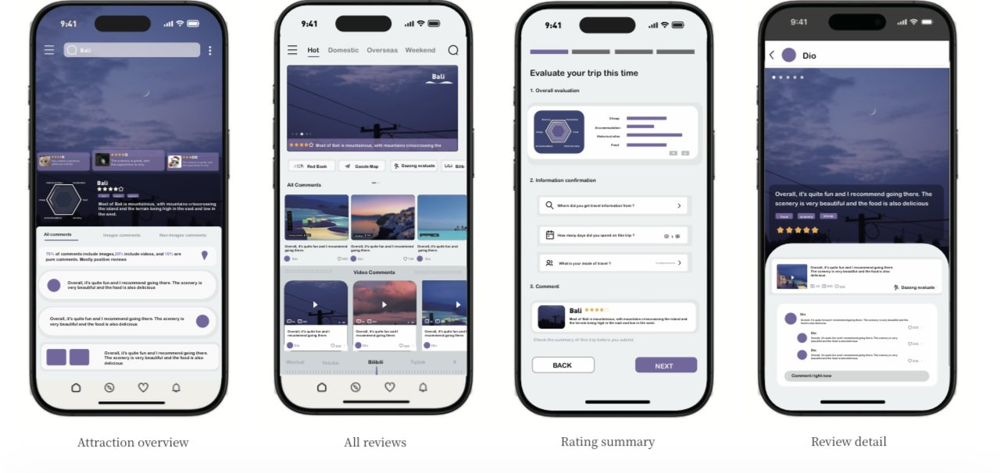
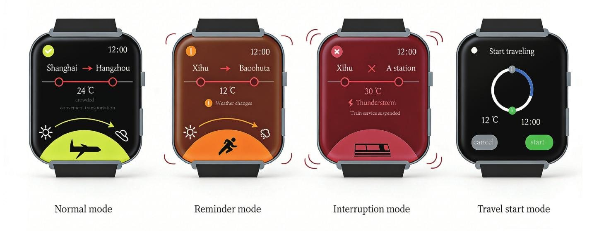
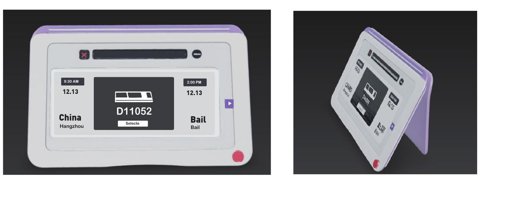
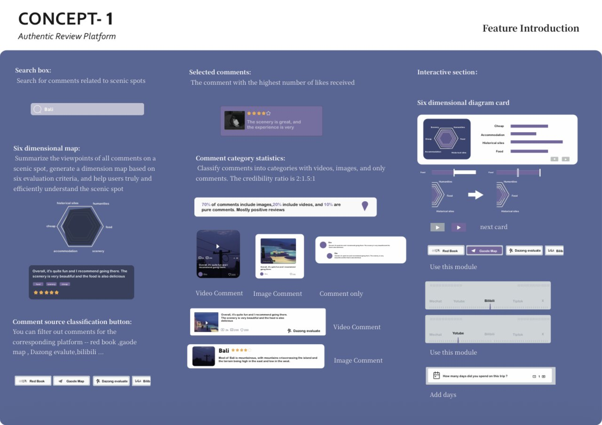
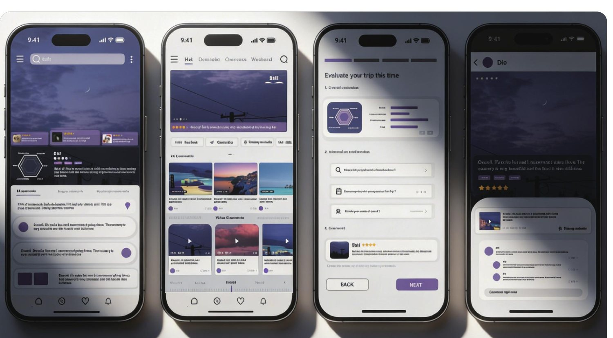

Three alternative concepts, followed by feedback and refinement of the review platform. These are design prototypes, not a deployed travel service.
三个设计方案及反馈迭代，最终深化评价平台；为设计原型。
01 · Authentic Review Platform真实评价平台
02 · Real-time Status Travel Tag实时旅行状态手表

03 · Dynamic Itinerary Card动态行程卡

Review interface details评价界面功能

Final interface refinement最终界面深化
